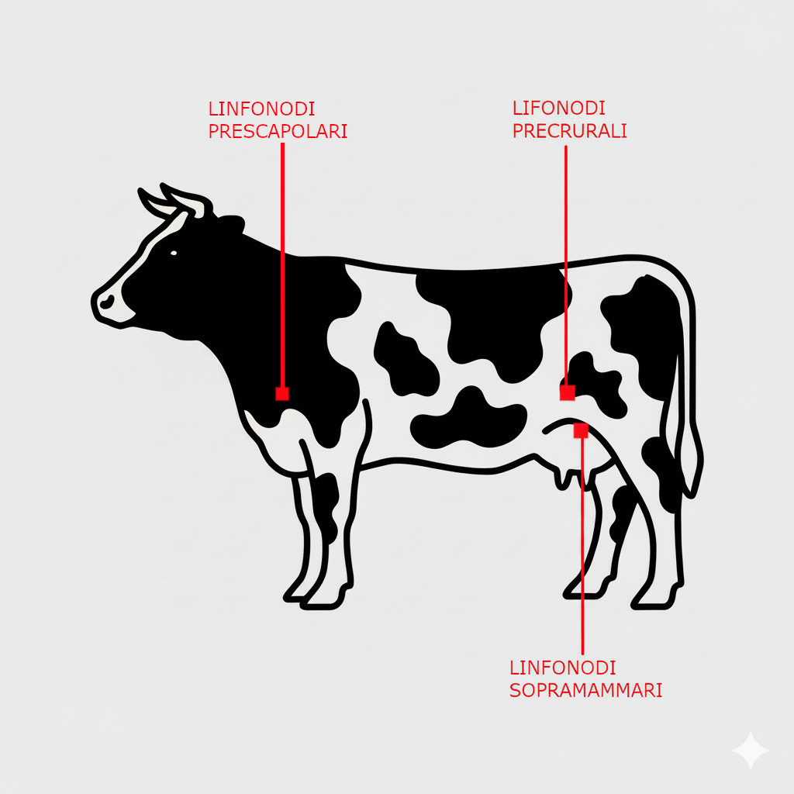

La Palpazione Clinica
La palpazione è la terza fase del metodo clinico e consiste nell'esame fisico dell'animale attraverso l'uso del tatto. Permette di apprezzare caratteristiche delle strutture anatomiche superficiali e profonde che non sono valutabili con la sola ispezione. È una manualità fondamentale per confermare i sospetti diagnostici e localizzare con precisione il processo patologico.
1. Principi e Parametri della Palpazione
La palpazione va eseguita con manualità esperta, applicando una pressione adeguata alla regione anatomica. I parametri da valutare sono:
- Dimensioni e Forma: Aumento o diminuzione di volume di un organo o di una struttura (es. linfonodi).
- Consistenza: Può essere parenchimatosa (normale), dura, molle, fluttuante (presenza di liquido), crepitante (presenza di gas).
- Temperatura: Aumento (calore) in caso di infiammazione acuta, o diminuzione (freddo) in caso di deficit circolatori.
- Dolorabilità: Si valuta la reazione dell'animale alla pressione, che indica la presenza di dolore.
- Mobilità: Si verifica se una struttura è adesa ai piani sottostanti o se è liberamente mobile.
2. Palpazione Sistematica "Testa-Coda"
Si segue un ordine preciso per non tralasciare alcuna regione.
- Testa e Collo: Si palpano i linfonodi (intermandibolari, solo nel cavallo), le ghiandole salivari, la laringe e la trachea. Il polso arterioso si valuta sull'arteria facciale (nel cavallo e nel bovino) dove si apprezzano tutti i caratteri (frequenza, ritmo, durezza e celerità), e sull'arteria coccigea nel bovino, più agevole per la sola valutazione della frequenza. Con una palpazione-trazione della laringe/trachea si può evocare il riflesso della tosse.
Video Dimostrativo: Palpazione-Trazione
- Arti: Si esaminano le articolazioni (presenza di versamenti), i tendini e i legamenti. La palpazione del polso digitale nel cavallo, sull'arteria digitale palmare/plantare ai lati dei sesamoidi, è cruciale per diagnosticare processi infiammatori del piede (es. laminite).
- Torace: Si valuta la dolorabilità alla pressione degli spazi intercostali per evocare pleurodinia, un segno di pleurite. È possibile percepire il fremito, una vibrazione patologica associata a soffi cardiaci di elevata intensità.
Video Dimostrativo: Evocazione della Pleurodinia
- Addome: Si valuta la tensione della parete addominale (addome contratto per dolore) e si esegue il ballottamento/succussione per percepire la presenza di liquido libero. La manovra si esegue applicando colpi decisi e rapidi alla parete addominale con la mano a pugno, percependo l'onda di ritorno del liquido con il palmo della stessa mano appoggiato alla parete.
Video Dimostrativo: Manovra di Ballottamento
- Linfonodi Superficiali: Nel bovino, la palpazione dei linfonodi esplorabili (prescapolari, precrurali e soprammammari) è un momento fondamentale dell'esame.
Foto: Localizzazione Linfonodi Superficiali
Schema dei principali linfonodi esplorabili nel bovino.
3. Esplorazione Rettale
È una manualità diagnostica fondamentale nei grandi animali, in particolare nel bovino e nel cavallo. Si esegue introducendo un braccio guantato e lubrificato nel retto per palpare gli organi della cavità addominale e pelvica.
- Apparato Digerente: Si valutano il rumine (sacco dorsale), il reticolo (nel bovino), le anse intestinali (tenue e crasso), i linfonodi meseraici.
- Apparato Urinario: Si palpano il rene sinistro (nel bovino è mobile), la vescica (se piena) e gli ureteri.
- Apparato Genitale: Nella femmina si esaminano utero, ovaie e cervice. Nel maschio si valutano le ghiandole sessuali accessorie e, nel cavallo, gli anelli inguinali.
- Altre Strutture: Si apprezza l'aorta addominale e le strutture ossee del bacino.